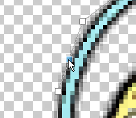
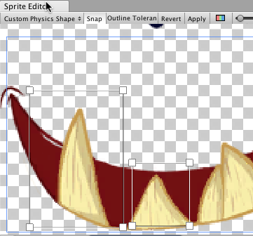

Sprite Editor: Custom Physics Shape
Use the Sprite Editor’s Custom Physics Shape module to edit a SpriteA 2D graphic objects. If you are used to working in 3D, Sprites are essentially just standard textures but there are special techniques for combining and managing sprite textures for efficiency and convenience during development. More info
See in Glossary’s Physics Shape, which defines the initial shape of the Sprite’s Collider 2D MeshThe main graphics primitive of Unity. Meshes make up a large part of your 3D worlds. Unity supports triangulated or Quadrangulated polygon meshes. Nurbs, Nurms, Subdiv surfaces must be converted to polygons. More info
See in Glossary. You can further refine the Physics Shape through the ColliderAn invisible shape that is used to handle physical collisions for an object. A collider doesn’t need to be exactly the same shape as the object’s mesh - a rough approximation is often more efficient and indistinguishable in gameplay. More info
See in Glossary’s component settings.
To open the Custom Physics Shape module, in the Project windowA window that shows the contents of your Assets folder (Project tab) More info
See in Glossary, select the Sprite you want to edit. To open the Sprite in the Sprite Editor window, in the Sprite’s InspectorA Unity window that displays information about the currently selected GameObject, asset or project settings, allowing you to inspect and edit the values. More info
See in Glossary window, select the Sprite Editor button.
To open the Custom Physics Shape editor, in the Sprite Editor window, open the upper-left drop-down menu and select the Custom Physics Shape module.
The Custom Physics Shape editor

Custom Physics Shape editor properties
| Property | Function |
|---|---|
| Snap | Snap control points to the nearest pixelThe smallest unit in a computer image. Pixel size depends on your screen resolution. Pixel lighting is calculated at every screen pixel. More info See in Glossary. |
| Outline Tolerance | Use this slider to control how tightly and accurately the generated outline follows the outline of the Sprite texture. At the minimum value (0), the Sprite Editor generates a basic outline around the Sprite. At the maximum value (1), the Sprite Editor generates an outline that follows the outline of the Sprite as closely as possible. |
| Generate | When you click this button, Unity automatically creates a physics shape outline based on the Outline Tolerance value you set. |
| Copy | After you have generated or set up a custom physics shape, click this Copy button to duplicate the custom physics shape. Leaving the Custom Physics Shape module or closing the Sprite Editor removes the copied physics shape from memory. |
| Paste | Use this button to paste a copied physics shape to the currently selected Sprite. If you have not used the Copy function to copy a physics shape, this button is not available. To Paste a copied custom physics shape to another Sprite, in the Project window select the Sprite while the Custom Physics Shape editor window is open. Then click the Paste button to paste the copied physics shape to the new Sprite. When you paste the physics shape, if a point in the physics shape is larger than the Sprite’s frame, Unity clamps the point to be inside the Sprite’s frame. |
| Paste All | Use this button to paste a copied physics shape to all Sprites in the Sprite Editor window, regardless of selection. If you have not used the Copy function to copy a physics shape, this button is not available. Use this function to apply the same physics shape to multiple Sprites in the same Texture (such as when a Texture has its Sprite Mode set to ‘Multiple’). When you paste the physics shape, if a point in the physics shape exceeds the Sprite’s frame, Unity clamps the point to be inside that Sprite’s frame. |
| Revert | Undoes any unsaved recent changes made in the editor window. To save changes, click Apply first. |
| Apply | Select this button to save all changes made in the editor window. |
Using the Custom Physics Shape editor
The Custom Physics Shape editor provides various functions to allow you to create or generate the physics shape of the Sprite. There are two ways to create a custom physics shape: have Unity automatically generate the shape, or manually creating and editing it in the editor window.
Generating the physics shape
To have Unity automatically generate a physics shape that follows the shape of the original Sprite texture, and that also takes into account transparent areas in the texture, click the Generate button. However, you can adjust how tightly the generated physics shape follows the Sprite texture by adjusting the Outline Tolerance slider.

Adjust the Outline Tolerance slider to refine the outline of the physics shape that Unity generates. Increasing the value increases how closely the outline follows the shape of the Sprite texture. Leaving the slider at 0 generates a physics shape that more loosely follows the Sprite texture.

After adjusting the Outline Tolerance value, to have Unity automatically generate the physics shape based on the slider settings, click Generate. If you adjust the slider value after generating an outline, to regenerate the outline based on the updated slider value, click Generate again.
Manually editing the physics shape
You can create your own custom physics shape and edit it in two ways. The first way is by automatically generating an outline, and then moving the control points of the generated outline to further refine it. Alternatively, click and drag over any space in the Custom Physics Shape editor window to create a rectangular outline with four control points and begin refining the outline by moving the control points or adding and removing them.
Moving a control point
To adjust the shape of the Mesh outline, click and drag the control points. When you hover over a control point, it turns blue to indicate that you can select it. Click and drag the control point to different positions to adjust the shape of the physics shape outline. You can select multiple control points at once by clicking and dragging the cursor over an area to select all control points within that area. You can then re-position or remove all selected control points.

Adding/removing control points
To add a control point, place the cursor over the edge of the outline. A preview of the control point appears along the outline’s edge. Click to add a new control point at that location. To remove a control point, select it and press the Del/Command+Del keys.
|  |  |
|---|---|
| Fig.1: Transparent control point. | Fig.2: Click to create a new control point. |
Moving edges
To select the edges of the physics shape instead of its control points, hold the Control/Ctrl key. Click and drag the highlighted edge to move it into new positions to affect the physics shape.
 |
 |
|---|---|
| Fig.1: Select the edge of the outline. | Fig.2: Drag and move the edge freely once selected. |
Working with multiple outlines
A Sprite’s physics shape can contain multiple separate outlines. This is useful if only specific areas of a Sprite need a Collider 2D Mesh for collisionA collision occurs when the physics engine detects that the colliders of two GameObjects make contact or overlap, when at least one has a Rigidbody component and is in motion. More info
See in Glossary. For example, you might want a character to only respond to collisions on specific areas of its Sprite as part of your game’s damage mechanic.
To create a new rectangular outline with four control points, click and drag over any empty space in the Sprite Editor window. Repeat this step to create additional outlines. You can refine each outline in the same way you would for a single Physics Shape outline.
 |
|
|---|---|
| Fig. 1: Click and drag to create a four-point box. | Fig. 2: Box physics shape with four control points. |
 |
 |
| Fig. 3: Click and drag again for another box. | Fig. 4: Repeat to create more separate outlines. |
Additional tips
If you have edited the outline of a Sprite that existing GameObjectsThe fundamental object in Unity scenes, which can represent characters, props, scenery, cameras, waypoints, and more. A GameObject’s functionality is defined by the Components attached to it. More info
See in Glossary already refer to, right-click the title of the Collider 2D component and select Reset. This updates the shape of the Collider 2D Meshes.
Copy and Paste editor window functions added in 2020.1 NewIn20201
2018–05–24 Page published